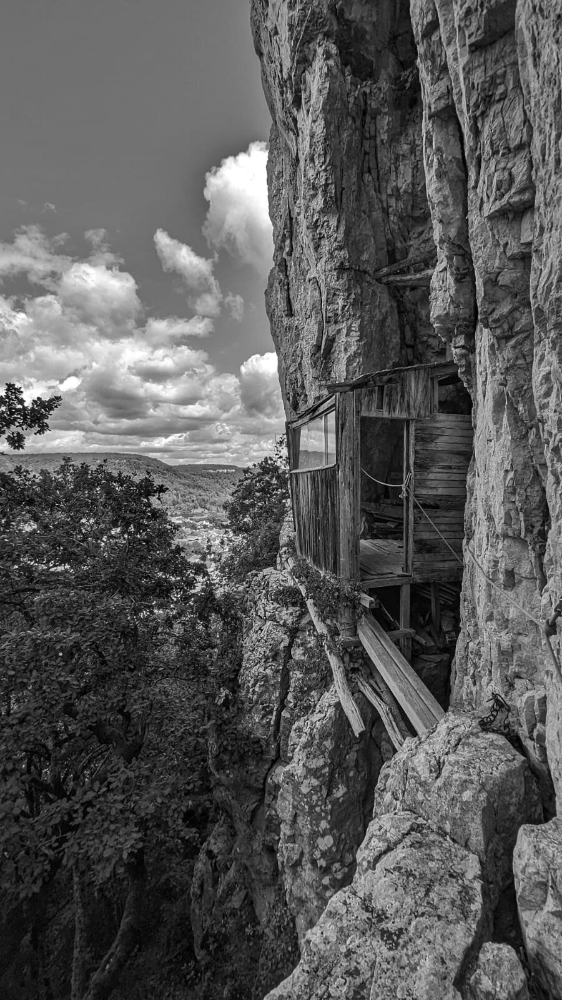

Le sous-sol
Petit secteur sous Dernier cri. Pied de voies agréable (petite pelouse).
Touchez une voie pour voir ses infos, appui long pour la retrouver dans la liste.
-
26
Apparence trompeuse
6bUne fissure facile suivie de mouvements de plus en plus durs.
Mathieu Vigot
-
27
Mélodie en sous-sol
5c+/6aPrises franches mais voie qui nécessite un peu de lecture au milieu.
Jean-Yves Salin
-
28
Dans la mesure du possible
7b+Mur à doigts, mouvements intenses. Classe !
Jean-Yves Salin
-
29
LHOOQ
6a+Fissure oblique intéressante.
René Hopf
-
30
Première classe
6aUne fissure évidente, la première voie équipée par Youri.
Youri Guiot
-
31
Topissime
6a+Physique sur de bonnes prises. Sortie par 27 ou 29.
Youri Guiot
-
32
Clin d’œil
6aBelle voie, physique au départ.
René Hopf
-
33
Guernica
5c+Fissure sympa.
René Hopf
-
34
Superflux
5c+Mur intéressant.
René Hopf
